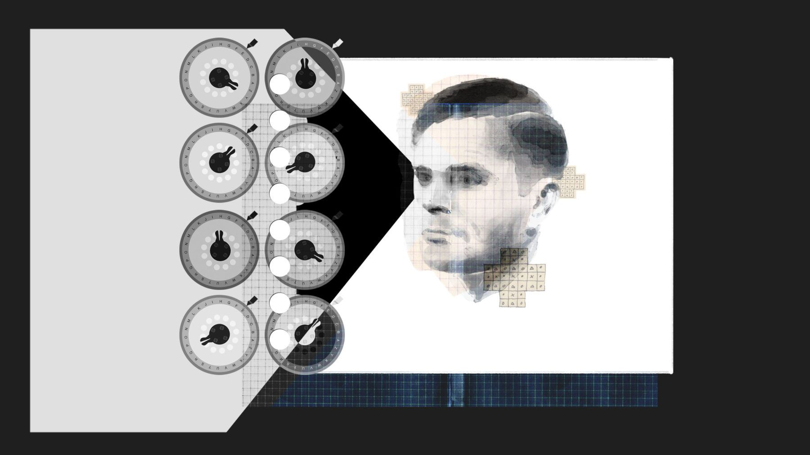

Створенням систем (механізмів, якщо йдеться про роботів або комп'ютерні програми), які можуть розв'язувати складні задачі без допомоги людини, займається галузь штучного інтелекту.
Штучний інтелект — (англ. Artificial intelligence, AI) — це область інформатики, яка займається розробкою інтелектуальних комп’ютерних систем, інтелектуальних комп’ютерних програм, які імітують роботу людського мозку.
Історична довідка: Улітку 1956 року в Університеті Дартмута у США пройшла перша робоча конференція науковців з проблематики штучного інтелекту. Саме тоді і з’явився сам термін «штучний інтелект».
Розрізняють декілька причин, чому попит на штучний інтелект стає все більш актуальним у наш час:
Нині існує багато підходів як до розуміння задач штучного інтелекту, так і до створення інтелектуальних систем.
Сьогодні дослідження в галузі штучного інтелекту орієнтовано на такі сфери використання: робототехніка, голосовий пошук, відеоігри, транспорт, торгівля, обслуговування, медіа.
Найвідоміший представник технологій штучного інтелекту в медійному просторі — робот Софія, який отримав громадянство в Саудівській Аравії у 2017 р. Робот здатний підтримувати бесіду, відтворює до 62 правдоподібних виразів обличчя, робить провокативні заяви й жартує про Ілона Маска та знищення людства. Машини, на кшталт суперкомп'ютера IBM Watson, можуть діагностувати рак, складати класичні симфонії та конкурувати з людиною, а часто й перевершувати її. Деякі програми навіть імітують структуру людського мозку, що в комплекті з нейронними мережами приводить до того, що машини можуть вирішувати проблеми. Перелік подібних успішних роботизованих систем можна продовжувати: японський робот HRP-2, здатний рухатися серед уламків будинків, які постраждали внаслідок катастроф; марсоходи NASA Spirit, Opportunity та Curiosity, здатні рухатись поверхнею Марсу в автономному режимі; комп’ютер Deep Blue від IMB, який виграв у шахи в людини-чемпіона, і багато інших.
Пошукові асистенти, такі як Siri, Alexa, Cortana – оснащені програмами опрацювання й розпізнавання людського голосу, що робить їх інструментами штучного інтелекту.Наразі можливості голосового пошуку доступні на 3,9 млрд пристроїв: Android, Apple, Windows. По всьому світу, і це не враховуючи інших виробників. Через свою розповсюдженість голосовий пошук є однією з найсучасніших технологій з підтримкою штучного інтелекту.
Відеоігри вже давно використовують технологію штучного інтелекту, складність і ефективність якого зросла в геометричній прогресії протягом останніх кількох десятиліть. Унаслідок цього, наприклад, віртуальні персонажі здатні поводити себе абсолютно непередбачуваним чином, аналізуюючи навколишнє середовище.
Повністю автономні автомобілі все більше наближаються до реальності. У 2010 p. Google на дорогах Каліфорнії запустив автомобіль, який мав здатність рухатись вулицями міст й автострадами самостійно, без участі людини. Для вирішення цієї надважкої задачі автомобіль обладнано різноманітними сенсорами. Безпілотні автомобілі самостійно реагують на дорожню ситуацію і дотримуються певного маршруту тощо.
Великі ритейлери, на кшталт Target й Amazon заробляють мільйони завдяки здатності їх магазинів передбачити потреби користувачів. Так, сервіс рекомендацій на сайті amazon.com працює на базі технологій машинного навчання, вони ж допомагають обирати оптимальні маршрути автоматичного переміщення в центрах обробки й виконання замовлень. На базі цих самих технологій працюють ланцюжок поставок і системи прогнозування й розподілу ресурсів. Технології розуміння й розпізнавання природньої мови лягли в основу сервісу Аlеха. На базі глибокого навчання побудовано нову ініціативу компанії з використанням дронів — Prime Air, а також технологію із застосуванням машинного зору в нових точках роздрібної торгівлі — Amazon Go.
У сфері послуг чат-боти зробили революцію в обслуговуван-ні, і споживачі вважають їх не менш зручними за телефони чи е-мейли. Концепція проста: бот із штучним інтелектом, що працює на веб-сайті підприємства, відповідає на запити відвідувачів, на кшталт: Яка ціна? Який номер телефону вашої компанії? Де ваш офіс? Відвідувач отримує пряму відповідь замість того, щоб шукати потрібну інформацію по сайту.
Інтернет речей — це концепція обчислювальної мережі фізичних предметів (тобто власне речей), які оснащено деякими технологіями для взаємодії один з одним
Це концепція комунікації об'єктів («речей»), які використовують технології для взаємодії між собою та з навколишнім середовищем. Також ця концепція передбачає виконання пристроями певних дій без втручання людини. Таким чином, усі пристрої: в будинках, в автомобілях, на користувачеві виконують обробку даних, їх аналіз й обмін між собою та, залежно від результатів, приймають рішення й виконують певні дії.
Інтернет речей (Internet of Things, скорочено IoT) — це глобальна мережа підключених до Інтернету фізичних пристроїв — «речей», оснащених сенсорами, датчиками та пристроями передачі інформаційних даних. Ці пристрої об'єднано за допомогою підключення до центрів контролю, управління й опрацювання інформаційних даних.
Інтернет речей об'єднує реальні речі у віртуальні системи, здатні вирішувати абсолютно різні завдання. Ключова ідея концепції: з’єднати між собою всі об’єкти, які можна з’єднати; підключити до мережі; за рахунок цього отримати синерію.
Для реалізації ІоТ необхідна екосистема, яка включала б у себе «розумні речі» — різні пристрої, оснащені датчиками; мережу доступу і передачі інформаційних даних (мобільні або фіксовані — не важливо); платформи для управління мережею, пристроями та додатками.
З розвитком мережі Інтернет і бездротових технологій стали реальністю «комунікації в будь-який час», використання смартфонів і планшетів дало змогу реалізувати принцип «комунікації в будь-якому місці». ІоТ додає новий вимір і третій ступінь свободи в просторі комунікацій — «комунікації з будь-якою сутністю», чи то комп'ютери, люди чи пристрої. Також принципово новим явищем стає «самостійний» обмін інформаційними даними між пристроями різних типів.
Умовно можна розділити всі ІоТ-проекти на дві групи залежно від типу комунікації пристроїв:масові (Massive MTC) та критичні (Critical МТС). Перед кожним типом стоять свої завдання, і кожний з них має свої вимоги до мережі.
Масові ІоТ-проекти — це «розумні» будинки, лічильники, рішення для відстеження вантажоперевезень або сільського господарства тощо. Такі рішення передбачають передачу невеликої кількості даних від величезної кількості сенсорів. Також масові ІоТ-проекти характеризуються некритичністю гарантованої передачі—отримання інформації. Якщо один раз за будь-якої причини інформацію з лічильника не отримали — нічого страшного, оскільки дані будуть оновлені під час наступного сеансу передачі. Основні вимоги тут — низька вартість пристроїв і їх мінімальне енергоспоживання.
Що стосується рішень на основі «критичної» машинної комунікації, у них абсолютно інші запити. Насамперед — це ультранизька затримка передачі сигналу (менше 5 мсек) і надвисока надійність мережі. Такі додатки називаються «критичними», оскільки при їх реалізації від роботи мережі залежить безпека й навіть життя користувача. Прикладами таких додатків можуть бути: автономні автомобілі, керування транспортними потоками, віддалена хірургія, управління промисловим обладнанням. Ці рішення поки що існують у вигляді прототипів або тестових зразків, оскільки для їх реалізації потрібні мережі наступного покоління — 5G.
У сучасному середовищі поширилось нове тлумачення інформаційного суспільства, а саме Smart-суспільство (розумне суспільство). У такому суспільстві технології, що базувалися на інформаційних даних, трансформуються в технології, які будуть базуватися на взаємодії та знаннях.
В основі Smart-суспільства лежить розвиток «суспільства знань», цифрових технологій, цифрового суспільства — усього того, що має назву цифрової ери розвитку цивілізації. Smart-суспільство побудоване таким чином, що «розумна» робота, яка утворена «розумним» життям, державою та бізнесом, базується на «розумній» інфраструктурі й «розумних» громадянах, які відіграють ключову роль у створенні Smartкультури. Зарубіжні вчені вважають, що розвиток таких галузей, як Smart-транспорт, Smart-охорона здоров’я, Smart-енергетика, Smart-суспільство, приведе до появи Smart-світу, детермінованого цифровими технологіями. Останнім часом стали виникати світові тренди в розвитку Smart: Smart-міста; Smart-країни; Smart-мобільності; Smart-екології; Smart-освіта; Smart-життя.
Розумні міста сьогодні — це основа економічного піднесення та суспільного прогресу світу. Розумне місто — це сучасна модель міської трансформації, у якій інформаційні технології дають змогу вирішити найскладніші проблеми, якісно змінити систему управління та створити умови для розвитку громади й кожної людини.
Познайомся із штучним інтелектом особисто: